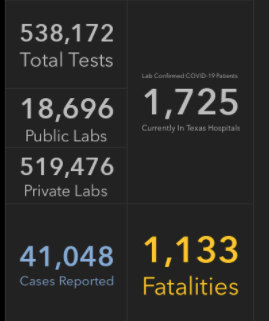
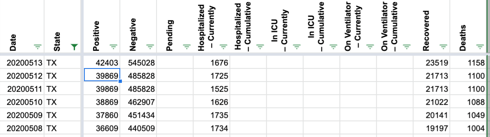
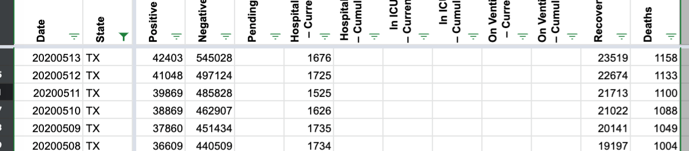
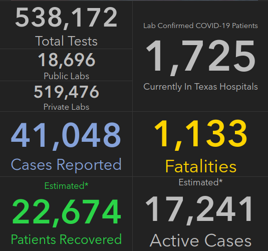

No update for Texas May 12
Issue number 415
johndhancock opened this issue on May 12, 2020 at 6:19 pm
Looks like the Texas Department of State Health Services had another day where they updated later than usual today (around 5 p.m.), missing COVID19Tracking’s update window. This happened a couple of weeks ago, so you all may already be aware of the missed update today, but wanted to raise a flag just in case.
Yep, this resulted in erroneous data for 5/12 and 5/13.
It looks like correct numbers should be:
5/12: 538172 - 525697 = 12,475 new tests (covidtracking currently shows 0) 5/13: 587431 - 538172 = 49,259 new tests (covidtracking current shows 61,734)
Thank you @kevinp2 @egribbin @mathcoder3141 @johndhancock
As noted above, the later on 5/12 update gave new positive, total, recovered, and fatalities numbers.
From

Before:

After:

Thanks for the quick fix, @goldfarb :-)
A question: Do you recommend obtaining the current spreadsheet from GitHub or from the web site? I am currently obtaining current.csv from here: https://covidtracking.com/api
I notice that there is also a GitHub counterpart: states_current.csv in https://github.com/COVID19Tracking/covid-tracking-data/tree/master/data
Oh cool, somebody already opened the issue. I took the liberty to take the screenshot of the stats for May 12. It looks like this is where y’all extract the data from. 